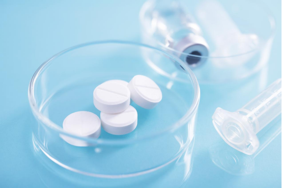
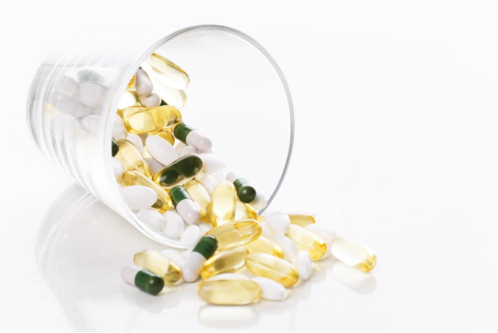
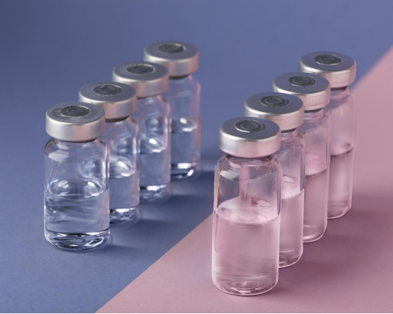

Industry Information
Sep. 11, 2024
In the pharmaceutical industry, the quality and type of raw materials used in drug production play a crucial role in ensuring the efficacy, safety, and stability of the final product. Understanding the types of pharmaceutical raw materials is essential for pharmaceutical companies and researchers alike. These materials form the backbone of any drug formulation, and their selection requires careful consideration of various factors, including regulatory compliance, purity, and sustainability.
Pharmaceutical raw materials are the substances used to manufacture drugs and other pharmaceutical products. They can be classified into several categories, including active pharmaceutical ingredients (APIs), excipients, intermediates, and solvents. Each type of raw material serves a specific purpose in the drug development process.
For instance, APIs are the core components that provide therapeutic effects, while excipients serve as carriers, stabilizers, or fillers to aid in drug delivery. The quality and consistency of these raw materials are paramount, as they directly influence the safety and effectiveness of the final product.

Pharmaceutical raw materials are the foundation of drug manufacturing. High-quality pharmaceutical raw materials ensure that APIs and excipients meet strict purity and potency requirements. Proper sourcing and testing of raw materials can prevent contamination, improve product consistency, and streamline production. Learn more about pharmaceutical raw materials and their role in drug development here: What is an Active Pharmaceutical Ingredient (API)?.
In pharmaceutical manufacturing, raw materials include both APIs and intermediates. Intermediates are compounds synthesized during the production process that ultimately form the active ingredient. Understanding the differences between pharmaceutical raw materials, intermediates, and final APIs helps manufacturers optimize production efficiency and ensure product quality. For more details, see: API vs FDF vs Intermediates.
Active Pharmaceutical Ingredients (APIs): APIs are the primary substances in a drug that produce the intended therapeutic effects. They can be synthetic or derived from natural sources, such as plants or animals. The production of APIs requires stringent quality control to ensure they meet the necessary purity and potency standards.
Excipients: Excipients are inactive substances that are combined with APIs to form the final drug product. They can include binders, fillers, preservatives, and stabilizers. Excipients play a vital role in ensuring the proper delivery and absorption of the drug in the body, as well as enhancing the overall stability of the product.
Intermediates: Intermediates are chemical compounds that are produced during the synthesis of APIs. They are not present in the final product but are essential steps in the production process. Ensuring the quality of intermediates is crucial for the successful synthesis of high-purity APIs.
Solvents: Solvents are used to dissolve or extract APIs and other compounds during the manufacturing process. The choice of solvent is critical, as it can affect the yield, purity, and environmental impact of the production process. The pharmaceutical industry increasingly focuses on using safer and more sustainable solvents.
Preservatives and Antioxidants: These substances are added to pharmaceutical products to prevent degradation caused by microbial contamination or oxidation. Their presence ensures the stability and shelf life of the final product, which is vital for maintaining efficacy.
Coating Materials: Coatings are applied to tablets and capsules to protect them from environmental factors, mask unpleasant tastes, and control the release of the drug. Coating materials can range from simple sugar coatings to more complex polymers designed to release the drug at a specific rate.

The pharmaceutical industry is under increasing pressure to adopt sustainable practices and green chemistry principles in the production of raw materials. Green chemistry focuses on designing processes that minimize waste, reduce the use of hazardous substances, and conserve energy. Sustainable practices include sourcing raw materials from renewable resources, reducing the carbon footprint of manufacturing processes, and using biodegradable excipients and solvents. Pharmaceutical companies are also exploring biotechnological approaches to produce APIs and other raw materials in a more environmentally friendly manner.
Effective management of pharmaceutical raw materials requires reliable suppliers and robust quality control. Factors such as origin, storage conditions, and certificate of analysis (CoA) are critical to ensure consistency across batches. Companies looking to source high-quality raw materials can explore our curated selection of API products with guaranteed quality.
The quality of pharmaceutical raw materials directly affects the performance of Finished Dosage Forms (FDFs). APIs derived from reliable raw materials ensure therapeutic efficacy, while excipients sourced from quality raw materials guarantee stability and manufacturability. Understanding the supply chain of pharmaceutical raw materials is key for pharmaceutical companies to maintain regulatory compliance and product consistency. See also: Differences Between APIs and Excipients.
The future of pharmaceutical raw materials lies in the integration of advanced technologies and sustainable practices. The development of synthetic biology and biotechnology is expected to revolutionize the production of APIs and excipients, enabling the creation of more complex and targeted therapies. Additionally, there is a growing trend towards personalized medicine, which will require the development of specialized raw materials tailored to individual patient needs. The use of artificial intelligence (AI) and machine learning in raw material selection and quality control is also anticipated to enhance the efficiency and precision of drug manufacturing processes.
As the demand for innovative and sustainable pharmaceutical products grows, pharmaceutical raw material suppliers must continue to evolve and adapt to meet the industry's changing needs. This includes investing in research and development, adhering to stringent quality standards, and embracing new technologies that promote sustainability and efficiency.

At GOLIATH, we are committed to providing high-quality pharmaceutical raw materials that meet the highest industry standards. Our focus on innovation, sustainability, and customer satisfaction makes us a leading choice for pharmaceutical companies worldwide. Explore our range of products and discover how GOLIATH can support your pharmaceutical needs by clicking here.

Goliath Ingredients Holding Limited
1st Floor, Ellen Skelton Building, 3076 Sir Francis Drake’s Highway, Road Town, Tortola, VG1110, British Virgin Islands.
henry@goliathholding.com
Navigation
Email: henry@goliathholding.com